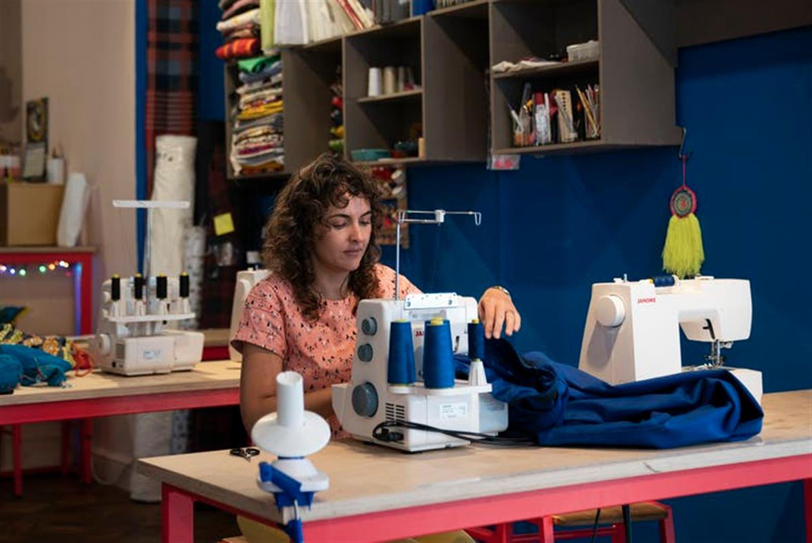

Coronavirus is revitalising the concept of community for the 21st century
April 29, 2020 11.24am BST
Author Fay Bound Alberti
Reader in History and UKRI Future Leaders Fellow, University of York
With more than a third of the world’s population in lockdown, there are widespread fears of social breakdown. As a historian of loneliness, I have recently been interviewed by journalists in Brazil, France, Chile and Australia, all pondering the same problems: what will the long-term effects of social isolation be? What techniques or habits might help us learn how to be alone?
Or conversely, how do we get away from other people if we are isolated with family, housemates, or an abusive partner? How do we cope with the loneliness of distant relations? Will it be hard for us to integrate back into society when the lockdown lifts? And what if we don’t want to? What if we love being alone and not having to attend social functions?
These are important questions. As never before, we are required to think about the nature of solitude, the quality of our relationships, whether we enjoy social contact, and what kinds. We must consider what belonging and community means to us, whether it’s gaming, “Quaranteen” Whatsapp groups set up by teenagers like my son, online birthday parties or mutual support groups connecting friends and family.
Yet something quite profound is also happening in terms of our relationships with people we don’t know. Despite negativity about the societal impacts of COVID-19 - from increased levels of loneliness to the limitations of social media – we are seeing some positive and unexpected results, including widespread outpourings of charity, togetherness and empathy for complete strangers. We might even be seeing a grassroots redefinition of what “community” means in the 21st century.
Mutual aid
All around the world the failings of the state are being taken up by ordinary people without concern for recompense. In Wuhan, China, volunteers worked to provide lifts for care workers. Indian-Americans across the US have set up a helpline to provide Personal Protection Equipment (PPE) for hospital workers in New York. Faith groups in Canada are providing food for impoverished international students and the elderly, and more than 27,000 volunteers have signed up to get food and services to the most vulnerable. In Brazil, volunteers are providing food aid to people living in slums, and drug gangs impose the curfews that the president refuses to implement.
In the UK, neighbours are looking out for vulnerable people and volunteering to offer support. University students and services are donating food and equipment to local hospitals, while urban and city dwellers alike stand outside their homes to clap every Thursday for hospital workers. Londoners are walking the dogs of people they have never met.
These forms of community action are self-organised and dependent on the same social media networks that have previously been condemned as antithetical to real relationships. And they seem to be spreading, virus-like, between cities and countries.

A volunteer makes surgical scrubs in Central London, April 27. Will Oliver/EPA-EFE
This may turn out to be influential when the lockdowns are lifted. It’s early days, and there is every possibility that self-interest will kick in, overriding these waves of determined goodwill (in stark contrast to the stockpiling panic and toilet roll obsessions of a mere month ago). But what seems to be at stake in these varied ways of supporting strangers is the very definition of community itself, a term which in recent history has become overused to the point of being meaningless.
Communitas
Community, like loneliness, is frequently used without reference to specific origins and contexts. The word also means many different things.
It can be regional – a group of locals living in the same region, or international – a community of beliefs, rather like the European Union. Community can mean people who share the same religion, job, ethnicity, or, increasingly, an online group, such as a fan site, in which the only shared element is a love of Kim Kardashian. Community can mean shared rights of access (a community park, for example), which takes us a little closer to its historical meanings. Or it can mean something more nebulous and difficult to articulate: a feeling of sharing and belonging – a “sense of community” – that is about place and time and emotional rootedness.
In my book, A Biography of Loneliness, I suggest that understanding community is critical to preventing unwanted loneliness. But to truly belong to a group or a place, in a way that is psychologically meaningful and encourages resilience, requires more than a shared interest. It demands a sense of shared obligation and commitment, something both emotional and practical.
This rendering of community as a place of exchange is evident in the origins of the word itself. “Community” is a late Middle English word, from the Old French comunete and the Latin communitas (communis or common). When use to describe common land, or “commonwealth” (common good), it denoted functional and practical connotations: mutuality and commitment, certain rights, the give and take of social obligation and a shared investment in its survival.
Together in Dublin. Brian Lawless/PA Wire/PA Images
In post-industrial, individualistic societies, this original meaning of community is missing, which is one of the reasons a language of loneliness predominates. “Community” is both everywhere and nowhere. Individuals might inhabit multiple online and offline communities, but those based on shared interests (whether that’s the Kardashians or cabbages), offer less give and take than communities of place, based on where they work or live.
People seldom inhabit communities of interest physically, though they might feel connected briefly and intensely. Their connections are often transitory, intense and fickle.
Here to stay?
These historical differences in the meanings of community are important. Practices that are based on a sustained, engaged concern for the wellbeing of others – especially those situated around habits of place and space – or that connect to established ways of sociability (in the way that cinema dates might be supplemented by Netflix Party) will likely continue after the current outbreak has passed. Other invented traditions will evaporate, unless they are incorporated into everyday practices – and with them, any hope of sustained social change.
The opportunity exists to bring online and offline communities together as never before, to reframe the responsibilities of the individual to society, and vice versa. If social media is seen as helpful in the support of elderly and vulnerable self-isolators (as has become apparent during the pandemic), for instance, it needs to be integrated into everyday lives, and developed with aged bodies in mind. Elderly people won’t start using Zoom unless they have access to training, devices and wifi, as well as hearing and visual aids.
Coronavirus is changing what is possible. Amid emotional devastation and uncertainty, it is providing the potential for more connectedness, as well as less, and for radically changing the meanings of community itself. This pandemic might, paradoxically, bring people closer.
SOURCE: THE CONVERSATION